| Metric | Value |
|---|---|
| Best val NLL | 3.6688 |
| Mean err BEFORE | 3.39 px |
| Mean err AFTER | 3.09 px |
| Improvement | 8.8% |
| Train samples | 59277 |
| Val samples | 8365 |
| Params | 1.62M |
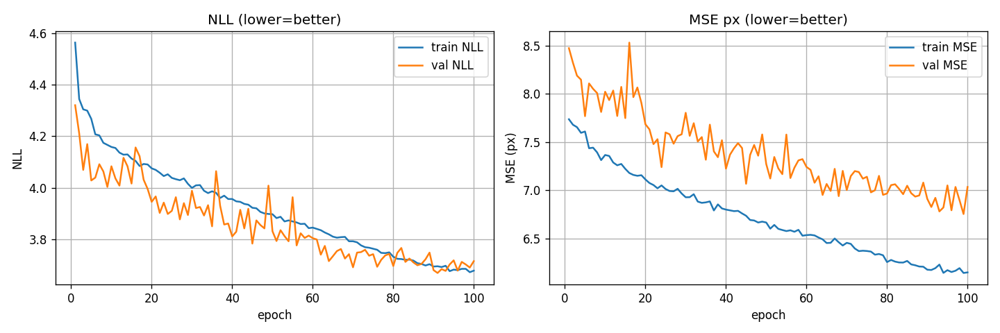
green×=GT red●=distorted cyan+=predicted (title: before→after px)
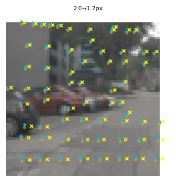
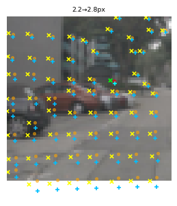
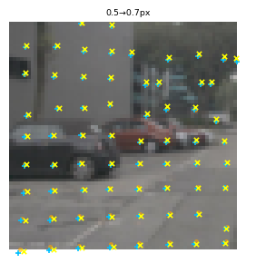
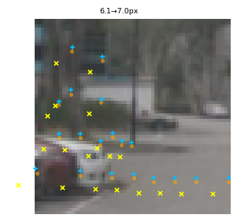
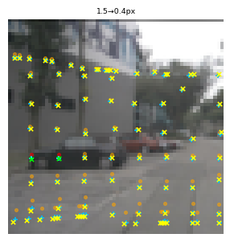
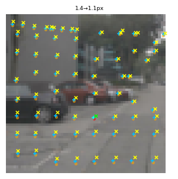
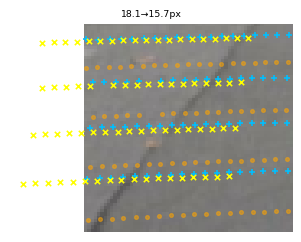
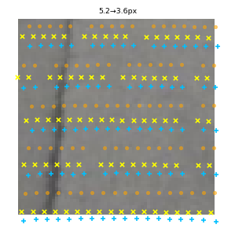
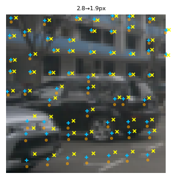
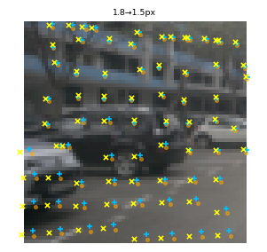
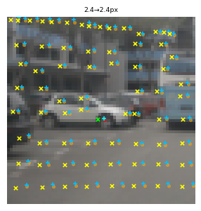
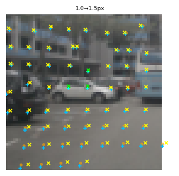
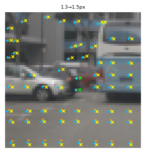
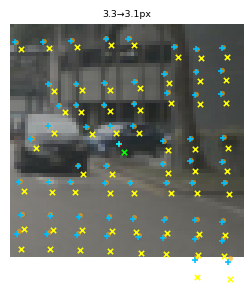
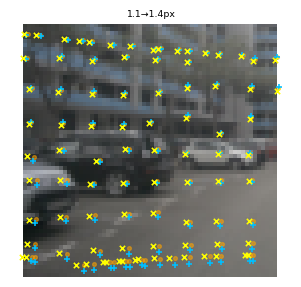
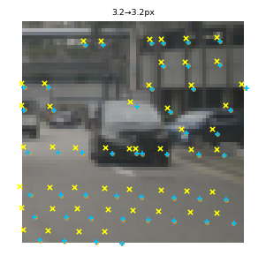